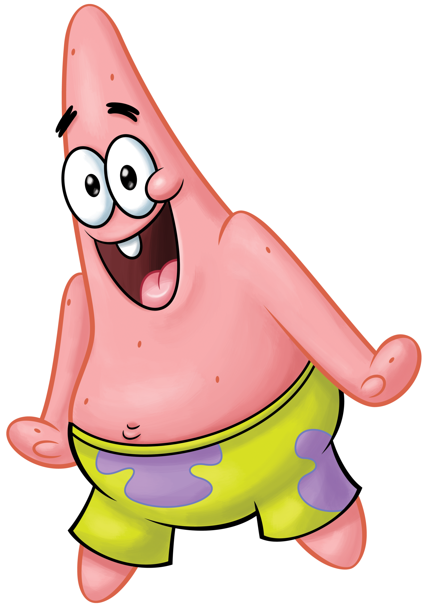

3)Патрик Стар

Описание:
Розовая морская звезда, которая живёт под камнем и носит шорты с цветами. Самая яркая черта его характера – крайне низкий интеллект. Лучший друг Губки Боба и часто бессознательно поощряет действия, которые приводят двоих к неприятностям. На протяжении всего мультсериала он безработный, но, как того требует сюжетная линия каждого эпизода, выполняет различные краткосрочные работы. Обычно он медлителен и лёгок в ходу, но иногда может становиться агрессивным, как настоящая морская звезда, а иногда совершает великие подвиги.
День Рождения:1 мая 1986г.
Пол:Мужской
Рост:10,2см
Вес:56г.
Интересные факты:
-Патрик живет самостоятельной жизнью и предпочитает обходиться без домашних животных
-В российском дубляже свой голос Патрику подарил артист Юрий Маляров
-В отличии от Губки Боба, Патрик отличный водитель
-Когда Патрик думает, его мозг начинает дымиться
-Патрик является самым ленивым жителем Бикини Боттом
-В первом сезоне Патрик был глуповатой морской звездой, но с каждым новым эпизодом Патрик становился всё глупее и глупее, что впоследствии сделало его неспособным читать и писать
-Когда-то Патрику дали награду «за нечего не делания, чем кто-либо другой»
Назад